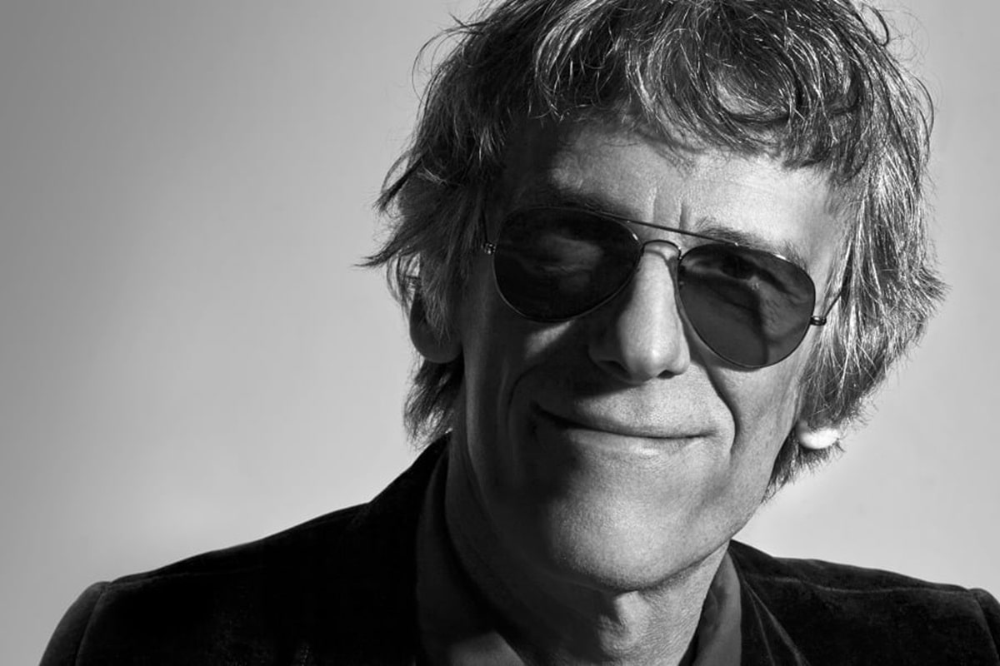

Inicios del camino solista
Después de dejar atrás sus proyectos grupales, Luis Alberto
Spinetta lanzó su primer álbum solista, "Kamikaze" (1982), una
obra íntima y acústica que marcó el inicio de una nueva etapa.
En este disco, se alejaba del sonido eléctrico de sus bandas
anteriores y se acercaba a una expresión más personal, casi
confesional. El repertorio incluía composiciones propias y
reversiones de temas ya conocidos, todo bajo una atmósfera
serena y poética.
Exploración y madurez artística
Durante las décadas del 80 y 90, Spinetta profundizó su búsqueda
sonora. Álbumes como "Privé" (1986), "Tester de violencia"
(1988) y "Pelusón of milk" (1991) mostraron una evolución en su
estilo, con arreglos más elaborados y letras cada vez más
complejas. En esta etapa, su música fusionó elementos del rock,
jazz y música experimental, consolidando su estatus de artista
de culto.
Una poética sin fronteras
En los 2000, Spinetta mantuvo su vigencia con trabajos como
"Silver Sorgo" (2001), "Para los árboles" (2003) y "Un mañana"
(2008). Estos discos reflejan una lírica contemplativa y una
producción sonora sofisticada. Las canciones de esta etapa
revelan un artista en plena madurez, capaz de combinar
complejidad musical con una sensibilidad emocional única.